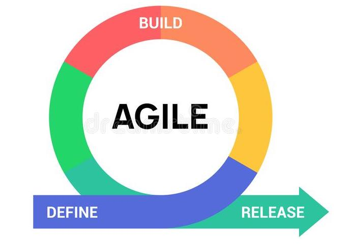

| Week | Task | Description |
|---|---|---|
| Stage 1: Planning and Preparation | ||
| 1 | Project Idea | Coming up the basic idea for the project |
| 2 | Project Planning | Working on the report for the project, listing out all the detailed features of the website, dividing features into tasks and planning the tasks for the next 14 weeks. |
| 3 | Building the demo | Making the demo version of the website. Designing the basic UI using Wix. |
| Stage 2: Core features | ||
| 4 | Registration system |
Building the registration system for the website which allows users to create new accounts or login via Google/Facebook/Pinterest. Implementing two types of accounts: Basic and Premium. |
| 5 | Image uploading and downloading | Implementing the uploading and downloading features. The images will be uploaded to Cloudinary then can be downloaded in 3 types of extension: jpg, png, and svg. |
| 6 | Blog Writing | Implementing the blog writing features. Users can create their own blogs using our online blog editor. |
| 7 | Image Approval System | Implementing the image approval system. The system mainly utilizes a pretrained AI model named NudeNet to detect and flag any censored images. All the flagged images will be sent to the admin for manual checking before being removed from the system. |
| 8 | Image Classification System | Building a system to categorize images automatically and put them into appropriate beans. The system will be using an AI model called MobileNet V2 to perform the classification task. |
| 9 | Rating and Feedback |
Implementing the rating feature which allows users to rate their favorite images. The higher rate an image gets, the more likely that image will appear on the first page. Adding the feedback feature for users to leave comments for each image. |
| 10 | Searching Engine | Implementing a searching engine which allows users to search for the desired images via text, date, and category. |
| Stage 3: Additional Features | ||
| 11 | Album | Adding image collection feature (album) to each user’s account. Users can add images to their favorite and manage them by creating an album to categorize images. |
| 12 | Contributor ranking | Adding a ranking board on the homepage to give credit to the contributors who actively upload images to the site. |
| 13 | Trending Sorting | Sorting images based on the current social trend on the Internet. |
| 14 | Automatic Image Update | Adding a feature to automatically bring 30 images from the backend storage to display on the frontend stock. This will make the users feel like there are always new images added each day. |
| 15 | Wi-Fi enabled SD card | Images taken from digital cameras can be set up to be automatically uploaded to the system’s cloud server. |
| 16 | Paid Advertisement | Adding paid advertisements to the website to gain some income for the team. The basic account users have to watch one advertisement video before downloading any images. |
Cyber Warriors Team
· 6 days ago · 4 min read
Project Timeframe

42 views